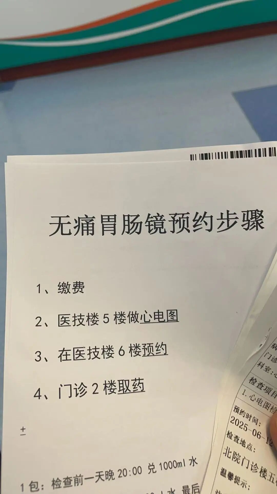
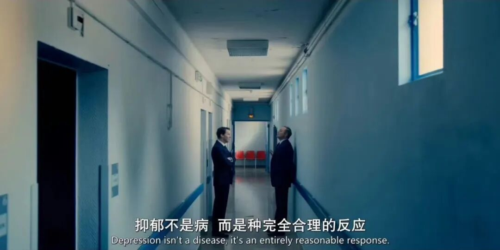
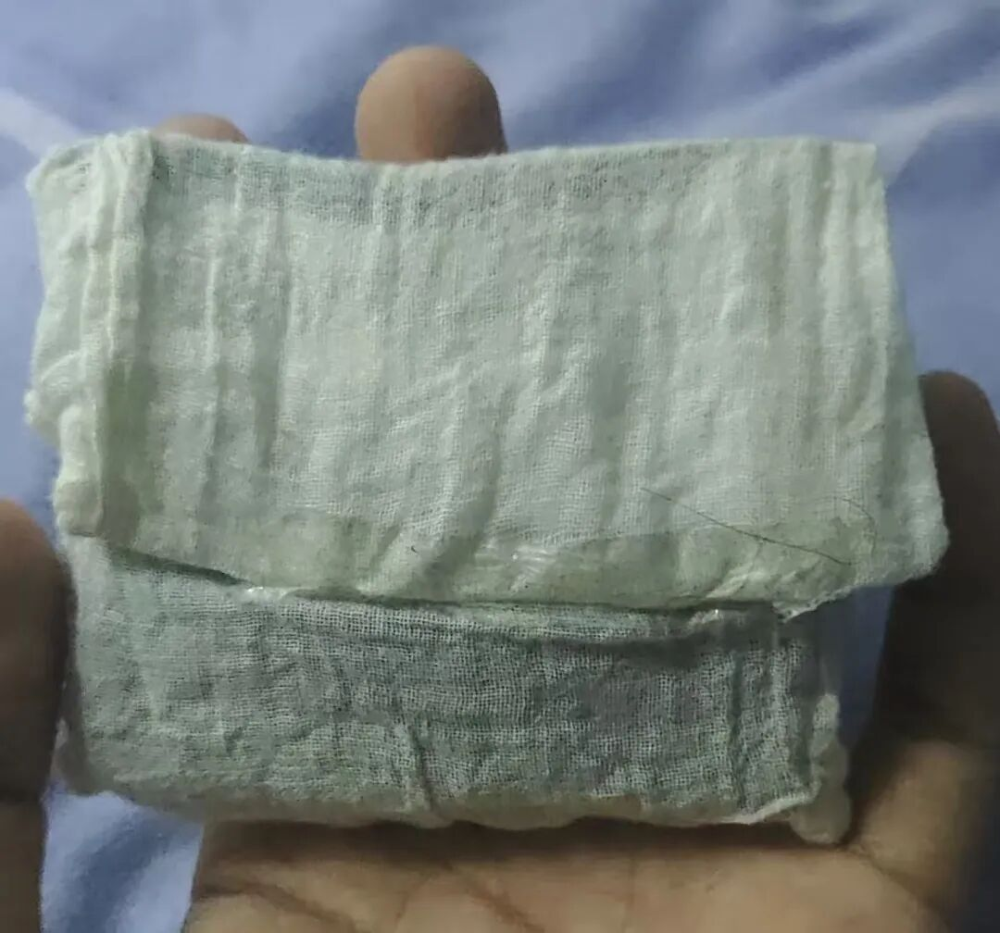
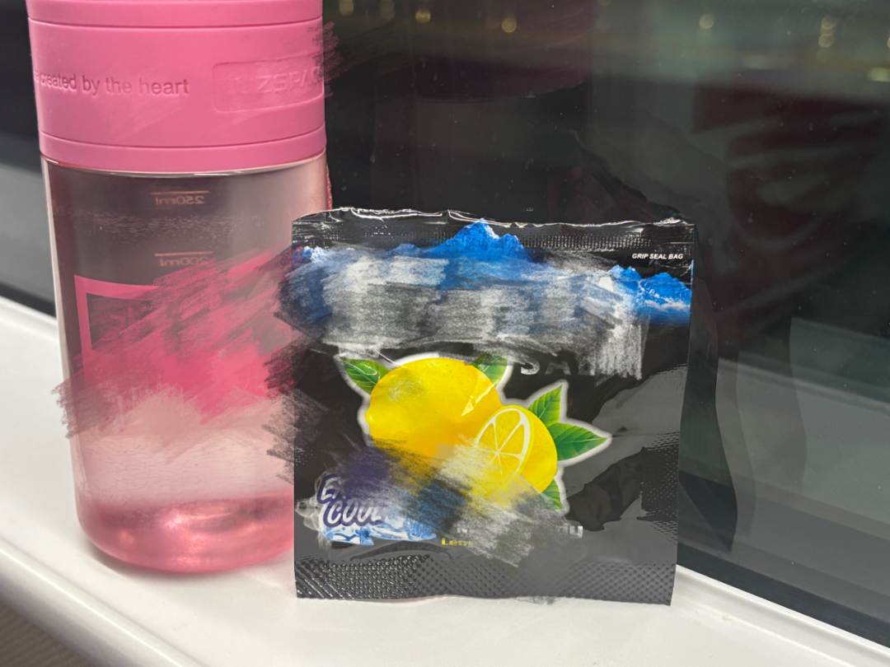
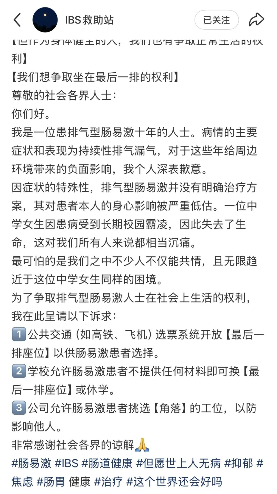

📈 肠易激，偷走年轻人最后的体面
IBS Steals Young People's Last Dignity
肠易激，

后浪研究所（ID：youth36kr）
上课的时候，后排的男生突然在全班面前喊道shout[ʃaʊt] v. 喊叫。
坐在前排的郑妍感觉有些尴尬embarrassed[ɪmˈbærəst] adj. 尴尬的。她不是故意deliberate[dɪˈlɪbərət] adj. 故意的的，但她没有办法控制自己的屁。
这种情况持续persist[pərˈsɪst] v. 持续了近一年。最早出现症状是在初二，在上午的最后一节课，郑妍没有任何征兆sign[saɪn] n. 征兆地开始放屁，每隔几分钟就会放一个。那节课下课，她回头问后桌有没有闻到什么臭味odor[ˈoʊdər] n. 臭味，对方说没闻到，郑妍才稍微放宽了心。排气的症状在中午午休回家就消失vanish[ˈvænɪʃ] v. 消失了，郑妍以为自己吃错了什么东西，便没放在心上。
但升入初三，郑妍的成绩不太理想，她有些焦虑anxious[ˈæŋkʃəs] adj. 焦虑的。又开始放屁了，而且放得很频繁frequent[ˈfriːkwənt] adj. 频繁的，每分钟都会有几个。她担心worry[ˈwɜːri] v. 担心后面的男生会说些更难听的话，让全班同学都知道。但越担心，排气的频率frequency[ˈfriːkwənsi] n. 频率就越高，愈发无法控制自己的屁，就这么陷入了恶性循环里。
本身就内向introverted[ˌɪntrəˈvɜːrtɪd] adj. 内向的的郑妍，甚至都不想上学了。每天中午回家，郑妍都要和爸妈哭，症状symptom[ˈsɪmptəm] n. 症状也在增加，头痛，腹痛，神经肌肉也酸痛。爸妈带她去看了消化digestive[daɪˈdʒestɪv] adj. 消化的内科的医生。医生让郑妍做了便检stool[stuːl] n. 粪便，但没有任何问题。回到诊室，医生指了指墙上的宣传publicity[pʌbˈlɪsəti] n. 宣传板，“孩子你看看墙上的症状，像不像？”
郑妍抬头看了看，宣传板上科普的是一个名叫“肠易激综合征”的疾病，典型typical[ˈtɪpɪkəl] adj. 典型的症状是腹痛腹胀，伴随放屁多、粘液便、总感觉拉不干净，分为便秘型、腹泻型、混合型（腹泻与便秘交替出现）与不定型（症状表现不典型，可能有腹痛、腹胀、排气等不规则症状）。基本和自己的症状一模一样identical[aɪˈdentɪkəl] adj. 完全相同的。
但医生告诉她，吃药没办法解决她的问题，只给她开了些益生菌，让她每天规律regular[ˈreɡjələr] adj. 有规律的着吃，等上大学就好了，“是心理的问题。”医生说。郑妍崩溃collapse[kəˈlæps] v. 崩溃了，“我现在可能连高中都不能上了，你却告诉我上大学就好了？”她感觉人生无望hopeless[ˈhoʊpləs] adj. 无望的，甚至想退学。她担心自己是不是这辈子就这样了，要独自一人每天活在控制不住放屁的恐惧terror[ˈterər] n. 恐惧里？
《最后生还者》剧照，图源网络
肠易激综合征简称IBS，是世界范围内的常见prevalent[ˈprevələnt] adj. 普遍的病，发病人群以中青年为主。据《2006 年至 2024 年全球肠易激综合征患病率prevalence[ˈprevələns] n. 患病率和危险因素：一项基于罗马 III 和 IV 标准的荟萃分析》，2006年至2024年间全球IBS患病率为14.1%。
但《肠易激综合征中西医结合诊疗diagnosis[ˌdaɪəɡˈnoʊsɪs] n. 诊断专家共识（2025年）》也指出，目前肠易激综合征缺乏全国性研究数据，且还没有明确的治疗办法。虽然其对患者的全身状况和预期expectancy[ɪkˈspektənsi] n. 预期寿命没有明显影响，但患者还是会因为症状长期反复发作，不能及时确诊与治疗效果不理想而严重影响生活质量，且造成一定的经济负担与社会负担。
确诊diagnose[ˈdaɪəɡnoʊz] v. 确诊后，为了让郑妍先安心考试，爸妈给她请了长假，每天在家上一对一。在家里，不用担惊受怕，控制不住放屁的症状就消失了，郑妍也顺利smoothly[ˈsmuːðli] adv. 顺利地考上了当地一所排名中上游的高中。
但上了高中，肠易激综合征卷土重来resurge[rɪˈsɜːrdʒ] v. 卷土重来了。巨大的学业压力，加上疫情期间，学校强制compulsory[kəmˈpʌlsəri] adj. 强制的封校，郑妍不能请假，只能住校。那段时间，郑妍的肚子没有一刻是不疼的，“它不是像腹泻那种尖锐acute[əˈkjuːt] adj. 尖锐的的疼痛，而是有气体或者岔气的那种，是一直存在的。”
而且症状愈发严重severe[sɪˈvɪr] adj. 严重的。一次在食堂排队打饭时，后面的同学突然说“好臭”，郑妍没有意识realize[ˈriːəlaɪz] v. 意识到到是自己传出的味道。后来回到教室，回到座位上的时候，第一排的男生喊了一句“什么味道”，郑妍看了男生两秒，发现他一直盯着自己stare[ster] v. 盯着看，她才意识到，自己好像漏气了——已经感觉不到在排气了。
哪怕距离这件事已经过去7年，去年10月，在刷到一篇给自己的前座起了个“屁王”外号的帖子后，郑妍的记忆memory[ˈmeməri] n. 记忆还是一下被拉回了那间教室，她想起那个时候的自己，还是觉得非常难受。
《大侦探福尔摩斯》剧照，图源网络
不少初高中的学生都出现了“漏气”的症状manifest[ˈmænɪfest] v. 显现。
2019年，初三的闫子文在高频排气——每十多分钟就会放一次屁——一段时间后，突然发现自己在放屁时感觉不到肛门的收缩contract[kənˈtrækt] v. 收缩了。但从裤子上明显obvious[ˈɑːbviəs] adj. 明显的的湿热感，还有周围人捂鼻子的动作，她知道自己肯定排气了。
她猜测speculate[ˈspekjuleɪt] v. 猜测，可能是之前想排气的时候，自己总会憋着，让气“收回去”。但随着放屁的频率越来越高，越发控制restrain[rɪˈstreɪn] v. 克制不住了。她愈发焦虑，担心自己在人群中或密闭enclosed[ɪnˈkloʊzd] adj. 密闭的环境里会给别人带来麻烦。
后来上学的时候，后排同学总会捂着鼻子covering[ˈkʌvərɪŋ] v. 捂着说“好臭”。为了不影响affect[əˈfekt] v. 影响同学，闫子文只能侧着身子坐在座位上。老师不理解comprehend[ˌkɑːmprɪˈhend] v. 理解，还告诉了闫子文的爸妈。在爸妈的询问中，闫子文说自己控制不住放屁，她们感到不可思议incredible[ɪnˈkredəbl] adj. 不可思议的，觉得是闫子文学业压力太大，幻想出来的症状。
“没有一个人和我说是什么病disease[dɪˈziːz] n. 疾病”
爸妈带着闫子文去了三甲tertiary[ˈtɜːrʃieri] adj. 第三级的医院的心身医学科。
医生给闫子文诊断为焦虑状态，并且说闫子文控制不住排气的症状是她幻想出来的，给她开了两次心理咨询治疗，但也是围绕着闫子文“幻想”自己排气的症状进行辅导counseling[ˈkaʊnsəlɪŋ] n. 辅导。闫子文最初也以为自己是幻想的，但后来找朋友验证verify[ˈverɪfaɪ] v. 验证才知道，自己真的排气了。
医院查不出原因，闫子文开始在网上求医consult[kənˈsʌlt] v. 求诊。刷到一位网友的分享，症状和自己一样——肛门没办法收缩，但能感觉凳子在慢慢变热，对方说自己在国外确诊confirmed[kənˈfɜːrmd] adj. 确诊的了肠易激综合征。也是那时，闫子文才知道自己的病叫肠易激综合征，“原来apparently[əˈpærəntli] adv. 原来有人跟我有一样的病。”她想。
但即便如此，2023年，闫子文再去医院的肠胃外科检查，明确和医生说自己的症状不是幻想出来的，也和医生提到了肠易激综合征，但在一系列检查后，结果还是没有任何异常abnormal[æbˈnɔːrməl] adj. 异常的。
今年26岁的刘蕴卓也是在网上确诊diagnosed[ˈdaɪəɡnoʊzd] v. 被确诊的。2016年，高二在读的她第一次出现排气症状，每小时要排气4-10次——刘蕴卓在网上查过资料，正常人一天的排气规律pattern[ˈpætərn] n. 模式应该是4-10次。
第二个月刘蕴卓去医院检查，查了幽门bacteria[bækˈtɪriə] n. 细菌螺杆菌，还有肠道健康，都显示没有问题。直到临近approaching[əˈproʊtʃɪŋ] v. 临近高考，刘蕴卓在知乎看到了一个问答，“上课总放屁怎么办？”下面很多帖子都提到mention[ˈmenʃən] v. 提到“肠易激综合征”，刘蕴卓才知道自己放屁是因为IBS。
后来再去医院，刘蕴卓和医生说自己是肠易激，有些医生知道这个病，但也只能给刘蕴卓开一些常规conventional[kənˈvenʃənəl] adj. 常规的的药物，比如活菌肠溶胶囊，或是匹维溴铵片，同时也会强调，“这个药物有没有效果没办法保证，你这个是功能性的，没办法采取详细措施。”也有一部分医生甚至不知道这一病症disorder[dɪsˈɔːrdər] n. 失调，只说刘蕴卓没问题。
肠易激综合征被视为一种缺乏客观生物学指标的功能性functional[ˈfʌŋkʃənəl] adj. 功能性的肠病，在很长一段时间都处于部分医疗认知的盲区。所以大量患者只能在不同的科室department[dɪˈpɑːrtmənt] n. 科室间像皮球一样被踢来踢去。
腹泻型肠易激患者白鱼，在肠易激的第10年才得知ascertain[ˌæsərˈteɪn] v. 得知自己是什么病。
2012年，大四的白鱼正准备prepare[prɪˈper] v. 准备考研。不知道从哪天开始，上厕所的频率interval[ˈɪntərvəl] n. 间隔变成每天早上起来都要上一次，每顿饭后也要上一次，其他时间便意也会随机地来。但那时白鱼一门心思mind[maɪnd] n. 心思忙考研，并没放在心上，甚至想“肚子疼就疼，（能考上）要了我半条命也值。”想上厕所时，就带本教材textbook[ˈtekstbʊk] n. 教材，在厕所里读。考研结束把注意力attention[əˈtenʃən] n. 注意力从备考上移走，白鱼才意识到自己的肠胃出了问题，稍微吃一点东西就想上厕所。
一开始，白鱼以为自己是饮食dietary[ˈdaɪəteri] adj. 饮食的习惯不好，控制了饮食，又喝了中药调理。但都无济于事futile[ˈfjuːtaɪl] adj. 徒劳的。白鱼开始担心，是不是自己肠道intestinal[ɪnˈtestɪnəl] adj. 肠道的里长东西了。
他去医院挂过消化科、脾胃科、内科、外科、疼痛科，看过中医、西医，做过肠镜、胃镜，查过胰腺pancreas[ˈpæŋkriəs] n. 胰腺、腰、肾，甚至是前列腺，但都没有查出来什么。有些医生说他是肠胃功能紊乱，胃肠道蠕动速度很快，给他开了些调理肠胃的药物还有益生菌，症状能缓解alleviate[əˈliːvieɪt] v. 缓解两天，接着又变回老样子。白鱼愈发害怕fearful[ˈfɪrfəl] adj. 害怕的，担心自己是不是得了什么大病，“不能是肠癌吧？”

2025年，白鱼进行了肠胃镜复查reexamination[ˌriːɪɡˌzæmɪˈneɪʃən] n. 复查
直到2022年，在一家三甲医院的消化科，医生看着白鱼过往的就诊medical[ˈmedɪkəl] adj. 医疗的记录与6、7次的肠胃镜检查，“小伙子，你已经做了这么多检查，来这么多次了，而且你一进来就很焦虑。”她告诉白鱼，“你不用考虑consider[kənˈsɪdər] v. 考虑其他的了，你肯定是肠易激。”并让白鱼在下次肚子疼的时候进行心理暗示suggestion[səˈdʒestʃən] n. 暗示，“告诉自己你没问题的，不用吃药，你肠胃功能好着呢。”
白鱼当场就愣住stunned[stʌnd] adj. 震惊的了。他有一种尘埃落定的感觉，也觉得有些坑，“都多少年了，没有一个人和我说是什么病，我都工作好几年了，才有人告诉我肠易激综合征这个概念concept[ˈkɑːnsept] n. 概念。”
关注肠道健康与肠道菌群的南京市第二医院重症医学科医生郑宁，曾在社交媒体上分享过肠易激综合征的诊断标准，国际上对IBS的诊断主要依赖criteria[kraɪˈtɪriə] n. 标准罗马IV标准，也就是患者需要至少持续3个月出现与排便相关的反复性的腹痛，且症状伴随着叛变频率、大便性状的改变。而在中国的临床实践中，腹胀比腹痛更常见，而且同样与排便情况密切相关，所以医生在评估evaluate[ɪˈvæljueɪt] v. 评估时，必须重点关注腹胀发生的时间和缓解模式。
因为缺乏客观生物标志物biomarker[ˈbaɪoʊmɑːrkər] n. 生物标志物，医生诊断只能依赖患者的症状主诉和繁琐的排除性检查。

人的大脑和肠道之间是可以交互interact[ˌɪntərˈækt] v. 交互的。
1998年，美国神经学家迈克·格尔松教授在《第二大脑：肠胃神经系统失调的革命性新认知》一书中提出了“脑肠轴”的概念，指的是肠神经系统、自主神经系统与中枢神经系统之间的双向通路pathway[ˈpæθweɪ] n. 通路。也就是说，大脑和肠道会通过各种神经信号来影响对方，比如大脑会通过迷走神经感知常带状态，而肠道菌群可以产生血清素（一种与快乐相关的神经递质neurotransmitter[ˌnʊroʊtrænzmɪtər] n. 神经递质）。
这也是为什么，大家都说肠胃是情绪器官organ[ˈɔːrɡən] n. 器官。当压力pressure[ˈpreʃər] n. 压力大的时候，肠道功能也会受到影响。
而肠易激综合征患者的初次发作，很多都是心理作祟，往往来自于一次剧烈的情绪波动fluctuation[ˌflʌktʃuˈeɪʃən] n. 波动，或是长期的外界压力。
比如闫子文最初出现症状是在初三，因为长相问题被班级女孩看不顺眼，被女孩在的小团体一起霸凌bullying[ˈbʊliɪŋ] n. 霸凌。从那之后afterward[ˈæftərwərd] adv. 之后，闫子文就开始排气。
《你是星期几出生的》剧照，图源网络
刘蕴卓的排气则是因为学业academic[ˌækəˈdemɪk] adj. 学业的压力。高一的时候，刘蕴卓遇到了一位数学老师，老师采取的质问和辱骂的教学方式，给她造成了极大的心理创伤trauma[ˈtraʊmə] n. 创伤。后来为了逃离这位数学老师，刘蕴卓选了文科，却进入了一个人均average[ˈævərɪdʒ] adj. 平均的保底能考上211的班级，每天在班级里当“凤尾”，刘蕴卓的压力更大了。
确诊肠易激综合症后，白鱼也复盘review[rɪˈvjuː] v. 回顾了自己症状比较严重的那段时间，要么就是工作不顺利，要么就是担心自己的病。最高频peak[piːk] n. 高峰的时候，白鱼一天要上10次厕所。这也让他更焦虑anxiety[æŋˈzaɪəti] n. 焦虑了，“完蛋了，以后怎么办啊？我怎么找女朋友girlfriend[ˈɡɜːrlfrend] n. 女朋友？我怎么工作employment[ɪmˈplɔɪmənt] n. 就业？我一辈子lifetime[ˈlaɪftaɪm] n. 一辈子要困在这上面吗？”
越焦虑，症状越严重，甚至影响了日常生活routine[ruːˈtiːn] n. 日常。2015年，白鱼研究生毕业，拿到了10几个offer，其中还有当年正欣欣向荣prosperous[ˈprɑːspərəs] adj. 繁荣的的某个行业的管培生。有学长学姐毕业后在这一行，第一年就拿了30多万的薪资，他也很心动tempted[ˈtemptɪd] adj. 心动的，但“我知道我的底子，时间长了我的肠胃肯定是受不了的，天天拉。”最后，白鱼只能去了一个相对比较稳定stable[ˈsteɪbl] adj. 稳定的的行业。
而且肠道功能也会反作用feedback[ˈfiːdbæk] n. 反馈于大脑。
2024年，科克大学研究团队发现，肠道菌群耗竭depletion[dɪˈpliːʃən] n. 耗竭会影响中介压力和昼夜循环的下丘脑-垂体-肾上腺（HPA）轴，干扰糖皮质激素的昼夜节律，导致社交行为障碍和焦虑样行为，也就意味着，肠道菌群失调，更容易焦虑和抑郁。

《梅尔罗斯》剧照，图源网络
我们访问interview[ˈɪntərvjuː] n. 访谈的几位患者，都在后来出现了焦虑或抑郁的症状。
确诊identified[aɪˈdentɪfaɪd] v. 被确诊肠易激综合征后，闫子文的焦虑状态更严重了。只要在密闭空间或是人挤人的场合occasion[əˈkeɪʒən] n. 场合，就会产生焦虑，担心别人会闻到自己身上排泄物的味道。她每天都在想自己的病，担心周围人对自己的看法，甚至看到有人聚在一起说八卦gossip[ˈɡɑːsɪp] n. 八卦的时候，还会给自己“她们是在说我”的心理暗示。当时的闫子文甚至没办法学习，最终高考只考了433分，没有达到江西省的本科undergraduate[ˌʌndərˈɡrædʒuət] n. 本科生线。
刘蕴卓心理mental[ˈmentəl] adj. 心理的问题最严重的时候，是在高考后。好不容易度过了高考这一大关，却又要去一个新的环境，从早到晚要和别人共处一室，刘蕴卓完全无法控制地恐慌panic[ˈpænɪk] n. 恐慌。那个暑假，刘蕴卓甚至一步门都不出，每天宅confined[kənˈfaɪnd] adj. confined 在家在家里。因为每次出门，只要看到身边的人突然把手放在鼻子下面，或是咳嗽与叹气，大脑就会应激reflex[ˈriːfleks] n. 反射反应一般，自动把这些动作识别为自己排气了。
每踏出门的那一刻，刘蕴卓的压力值就会达到20，因为她的脑袋里总会有一个“我的身体会出现问题”的心理暗示hint[hɪnt] n. 暗示。一旦去到人群密度比较大的地方，刘蕴卓的压力值就会几何倍增multiply[ˈmʌltɪplaɪ] v. 倍增，一下子飙到80甚至是100。哪怕是回家后，这种压力还在，“因为你回来会复盘replay[ˌriːˈpleɪ] v. 回放，会一直回忆这个事情，让它不自觉地在你脑子里放映。”到后来，每次出门前刘蕴卓都会干呕retch[retʃ] v. 干呕，出现了躯体化症状。
而郑妍也在确诊肠易激综合征后，出现了厌学aversion[əˈvɜːrʒən] n. 厌恶、失眠、暴饮暴食的症状。成绩一落千丈plummet[ˈplʌmɪt] v. 暴跌，家里也被搞得“乌烟瘴气”，弥漫着焦虑和低气压。甚至父母都已经对她是放弃abandon[əˈbændən] v. 放弃的状态，“孩子都已经这样了，考什么样都无所谓了。”
但要强ambitious[æmˈbɪʃəs] adj. 有抱负的的郑妍，“不能让这些很小的事情影响我一辈子。”她要考一个好成绩，让同学、班主任还有父母都刮目相看impress[ɪmˈpres] v. 使印象深刻。既然肠胃是自己的情绪开关，她决定自己斩断这种恶性循环，试图摸索explore[ɪkˈsplɔːr] v. 探索出一套方法，硬生生扛过来。

为了减少自己的情绪内耗internal[ɪnˈtɜːrnəl] adj. 内部的，郑妍申请坐在了教室的最后一排。
在此之前，因为无法控制排气，郑妍总会对后桌很愧疚guilty[ˈɡɪlti] adj. 愧疚的。甚至有些讨好appease[əˈpiːz] v. 讨好的心理，给后桌同学买好吃的，以此降低对方的不满。“我就觉得拿人手短obligated[ˈɑːblɪɡeɪtɪd] adj. 有义务的，吃人嘴软。”
但在最后一排，郑妍的世界仿佛一下就清净tranquil[ˈtræŋkwɪl] adj. 安静的了。班级里的恩怨conflict[ˈkɑːnflɪkt] n. 冲突，小团体的注视，好像都和她无关了。她不用再时刻紧绷tense[tens] adj. 紧绷的神经担心排气影响后排的同学。烦恼奇迹miracle[ˈmɪrəkəl] n. 奇迹般地消失了，上课的注意力也更集中了。
但肠易激这个定时炸弹，还是会在不经意间引爆trigger[ˈtrɪɡər] v. 触发。
一次考试前，郑妍在中午吃了一块蒜饼，结果consequence[ˈkɑːnsɪkwens] n. 结果整个下午都在排气。后来上网搜，才知道大蒜、洋葱这些食物会加重aggravate[ˈæɡrəveɪt] v. 加重排气症状。郑妍在一条评论comment[ˈkɑːment] n. 评论中看到一位10多年的肠易激综合征患者，说自己通过低发漫（FODMAP）饮食解决了自己的肠易激。她决定试一试attempt[əˈtempt] v. 尝试。
FODMAP指的是可发酵ferment[fərˈment] v. 发酵的（Fermentable）、寡糖（Oligosaccharides）、二糖（Disaccharides）、单糖（Monosaccharides）和多元 （Polyols），低发漫饮食即这4种糖含量较低的饮食。
日本医学博士、消化内科医生江田证在《肠道断糖：告别肠易激》中指出，肠易激综合征患者出现肠道问题的原因不只是精神压力，和饮食也息息相关correlated[ˈkɔːrəleɪtɪd] adj. 相关的。在欧美的许多国家，低发漫饮食疗法已经成为很多肠道不适人群的首选preferred[prɪˈfɜːrd] adj. 首选的治疗方案。
江田证表示，执行低发漫饮食疗法，前3周要避免avoid[əˈvɔɪd] v. 避免食用一切FODMAP成分含量高的食物。之后再在饮食中逐一sequentially[sɪˈkwenʃəli] adv. 依次地加入这类食物，并记录饮食日记，找出让自己的肠道出现问题的食物。
郑妍按照书中所说的，开始写饮食日记，记录自己的饮食日常daily[ˈdeɪli] adj. 日常的，以及排气情况，并在每天睡觉前复盘吃了什么可能会让自己症状加重，做了什么让自己排便规律，比如今天排便很好，可能是因为早上喝了淡盐水。而自己只要喝了咖啡，就会马上想去厕所restroom[ˈrestruːm] n. 厕所。
除了饮食上的调整adjustment[əˈdʒʌstmənt] n. 调整，她还会在网上寻找各种方法，艾灸、仙人揉腹……只要有效果，就会一直用。郑妍逐渐建立起了一套生活秩序order[ˈɔːrdər] n. 秩序——早上6点多起床，喝一杯淡盐水，接着立马去厕所，一边上厕所，一边背单词、课文。晚上回家后，雷打不动unwavering[ʌnˈweɪvərɪŋ] adj. 坚定不移的地做艾灸。
好像奏效了，症状慢慢减轻，郑妍得到了正反馈reinforcement[ˌriːɪnˈfɔːrsmənt] n. 强化，心态也变好了。“想放屁我就放，反正我坐在最后一排也没人能闻到smell[smel] v. 闻到，漏气就漏气，反正我也不常出去。”她不再在乎身体的反应response[rɪˈspɑːns] n. 反应，目标只有一个，就是把成绩赶紧提上来。毕竟，“能做的我都做了，剩下的就顺其自然acceptance[əkˈseptəns] n. 接受吧。”她说remark[rɪˈmɑːrk] v. 说。2022年，郑妍高考考了560分，比刚上高三时足足fully[ˈfʊli] adv. 足足地提了150多分。
因为生病而对全世界充满歉意apologetic[əˌpɑːləˈdʒetɪk] adj. 歉意的的“讨好”，几乎是每个肠易激患者都会做的事。
第一次高考失利的闫子文，决定复读retake[ˌriːˈteɪk] v. 重考。处于崩溃breakdown[ˈbreɪkdaʊn] n. 崩溃边缘，她有点破罐子破摔，“想着我要不要给他们赔点钱，这样心里也能好受些。”她开始给后桌递手机备忘录，会介绍下自己控制不住排气的情况，并表示“如果你闻到了一些不好的气味scent[sent] n. 气味，我可以给你转点钱。”
为了掩盖味道，闫子文在网上购买了不知道多少款声称claim[kleɪm] v. 声称是“失禁病人用”的护理垫，价格从二十元到一百元不等，但这些垫子只能兜住排泄物，不能消除异味。后来，闫子文偶然accidental[ˌæksɪˈdentəl] adj. 偶然的刷到一款6元的给肠易激病人用的除味垫，效果竟然不错——当她再次把备忘录给后桌看的时候，对方表示“一点味都没有。”
听到这句话，闫子文没有如释重负relieved[rɪˈliːvd] adj. 释然的，反而有些生气，“这个病得了4、5年了，最后因为一个6块钱的除味垫解决了。”她觉得自己之前的努力好像都白费wasted[ˈweɪstɪd] adj. 白费的了。
6块钱的除味垫，成为了闫子文的必需品necessity[nəˈsesəti] n. 必需品。她像买卫生巾一样按月monthly[ˈmʌnθli] adv. 每月地购买，垫在裤子里，每天换一个。但没多久，闫子文再次点开购买链接，突然abruptly[əˈbrʌptli] adv. 突然地发现商家不存在了。
闫子文又慌了，她觉得别人又会闻到自己身上的异味stench[stɛntʃ] n. 异味。恐惧驱使compel[kəmˈpel] v. 驱使着她，把自己用过的除味垫一层一层拆开，研究商家使用的活性炭除味布料。并拿着样本sample[ˈsæmpəl] n. 样本，在网上挨个找厂家对比原材料，最终，她用自己买来的材料，手工复刻出了那款除味垫。

确定自己依旧没有味道后，闫子文的焦虑才逐渐消散dissipate[ˈdɪsɪpeɪt] v. 消散。

但物理调节regulation[ˌreɡjuˈleɪʃən] n. 调节只是第一步，对于肠易激患者，更重要的是心理的重建。
既然情绪牵扯着肠胃，白鱼开始对自己进行心理psychological[ˌsaɪkəˈlɑːdʒɪkəl] adj. 心理的暗示。他告诉自己，肠易激是功能性的原因，“每个人都会焦虑，有人焦虑是爆青春痘，有人是脱发，像我们这批人可能天生innate[ɪˈneɪt] adj. 天生的肠胃功能就不是那么好。”
后来，白鱼开始学着区分distinguish[dɪˈstɪŋɡwɪʃ] v. 区分虚假便意和真实便意，区分自己是非拉不可，还是可以缓一缓，“以前去10次厕所，有的就是拉一点点或者放一个屁。但我的脑肠轴过于敏感sensitive[ˈsensətɪv] adj. 敏感的，其实东西还在消化，大脑就告诉我要把这个东西排出来了。”每当这时，白鱼就会和肠胃对话，安抚soothe[suːð] v. 安抚它，告诉它，你好着呢。
郑妍的情绪自救，是从“逃离escape[ɪˈskeɪp] v. 逃离”开始的。
高三课业压力最重的时候，她会在每周六请一天假，回到家看中医或是自行上网课，离开了学校那种紧绷rigid[ˈrɪdʒɪd] adj. 僵硬的的环境，肠胃的警报逐渐解除，排便也规律了，“问题没有了之后，我就越来越轻松，慢慢地就走出来了。”
到了大学，卸下了升学的重担burden[ˈbɜːrdən] n. 重担，课余时间增加，郑妍感觉自己好像彻底好了。虽然在偶尔放纵indulge[ɪnˈdʌldʒ] v. 放纵饮食时，第二天还是会有些腹痛，但是两三天后，恼人的症状也都自行消退了。
上大学后的刘蕴卓则选择了“脱敏desensitization[diːˌsensɪtɪˈzeɪʃən] n. 脱敏治疗”。
她开始强迫force[fɔːrs] v. 强迫自己社交，去和身边认识或不认识的人打招呼、聊天。既为了转移自己对身体的注意力，也是为了找一个突破口breakthrough[ˈbreɪkθruː] n. 突破，“如果一直不跟外面交流，这个病就像是一个膨胀的气球，只要自己愿意往外戳破这个气球的话，心理负担就会轻很多。”
但这种虚假illusory[ɪˈluːsəri] adj. 虚幻的的心理防线还是在去年初崩塌了。研究生毕业graduate[ˈɡrædʒuət] v. 毕业的刘蕴卓，不得不出门找工作。想到要开始高强度的陌生人社交，她又回到了大学前的那种状态——每次出门前，都会紧张nervous[ˈnɜːrvəs] adj. 紧张的到想吐。
社交媒体也好像故意intentional[ɪnˈtenʃənəl] adj. 故意的一般，给她推送各种吐槽帖，“今天坐高铁，闻了几个小时的臭味”“为什么地铁上会有人放屁啊！”每一句抱怨，都砸在了刘蕴卓的心上，在四处奔波hustle[ˈhʌsl] n. 奔波面试的日子里，各种公共交通工具成了她的噩梦。

每次坐高铁，刘蕴卓都会备着薄荷糖和温水，以缓解ease[iːz] v. 缓解焦虑
后来，刘蕴卓在家gapgap[ɡæp] n. 间隔期了半年。直到去年10月才入职onboard[ˈɑːnbɔːrd] v. 入职了一家广告公司。在工作过程中，她遇到encounter[ɪnˈkaʊntər] v. 遇到了很好的朋友，会约着她一起出门。后来在一次出去玩，刘蕴卓把自己肠易激，且会随时排气的问题告诉inform[ɪnˈfɔːrm] v. 告知了朋友们，但朋友们却表示自己从来没有感觉到过。同时，也表示理解，说自己也会有情绪崩溃压力大的时候，“原来这个世界上的善意kindness[ˈkaɪndnəs] n. 善意比我想象中要大。”对排气的症状释然relief[rɪˈliːf] n. 释然了，刘蕴卓的恐惧也慢慢消失了。
但独自置身于陌生人群中时，那种无力感helpless[ˈhelpləs] adj. 无助的还是会卷土重来。
一次，刘蕴卓要坐高铁去外地面试，但买票时根本没有最后一排座位可以选择，“整个社会的体系system[ˈsɪstəm] n. 体系没有给我们留出空间。”她又生气，又无力powerless[ˈpaʊərləs] adj. 无力的，发了一篇帖子，“如果可以，我们愿意躲起来。但作为身体健全sound[saʊnd] adj. 健全的的人，我们也有争取正常生活的权利。我们想争取坐在最后一排的权利entitlement[ɪnˈtaɪtlmənt] n. 权利。”
虽然帖子下面，有不解和苛责criticism[ˈkrɪtɪsɪzəm] n. 批评，“和你们同处一个空间的人真的很无辜。”“可我上学的时候真的在一个肠易激同学身后坐了两年……很难共情empathy[ˈempəθi] n. 共情。”但也有些人会主动联系刘蕴卓，说希望了解understand[ˌʌndərˈstænd] v. 了解这一疾病。
也是从那时起，刘蕴卓决定建立一个“IBS救助站”，希望能找到一些治疗treatment[ˈtriːtmənt] n. 治疗办法，“可能治疗方案已经出现了，但是我们不知道，所以我想要找到一个具体的治疗方案，能完全把这个根给除掉。”也希望能给一些肠易激综合征患者带来一些心理上的扶持和陪伴companionship[kəmˈpæniənʃɪp] n. 陪伴，“告诉大家还有很多朋友，都在经历痛苦。”

在访问过程中，我们发现一个共性commonality[ˌkɑːməˈnæləti] n. 共性是，这些肠易激综合征患者都极度渴望通过某种世俗意义上的“成功”来换取外界的认可，以此获得“自己很好”的正反馈。
比如在刘蕴卓看来，升学advancement[ədˈvænsmənt] n. 晋升、找到工作，都是成功的表现。白鱼也曾为了获得认可recognition[ˌrekəɡˈnɪʃən] n. 认可，逼着自己去考注册会计师，并拿下了上海一家知名会计师事务所的offer，“我其实对那些根本就不爱，但就觉得我要补足我的短板，我要证明我很强。”
但也有人在经历反复的挣扎struggle[ˈstrʌɡəl] n. 挣扎与漫长的自救后，不再强求完美的自我。一些更轻盈lightness[ˈlaɪtnəs] n. 轻盈的东西开始在他们体内生长。毕竟好的标准standard[ˈstændərd] n. 标准，不是只有一个。
“现在的追求pursuit[pərˈsuːt] n. 追求很简单。”郑妍说，“就是找一份能够支撑sustain[səˈsteɪn] v. 支撑我生活的一份工作，然后有一个自己属于自己的房间，我可以不受他人的影响，我的肠胃我是舒服的，我的环境是温暖的是舒服的，就够了，这就是我所追求的生活。”